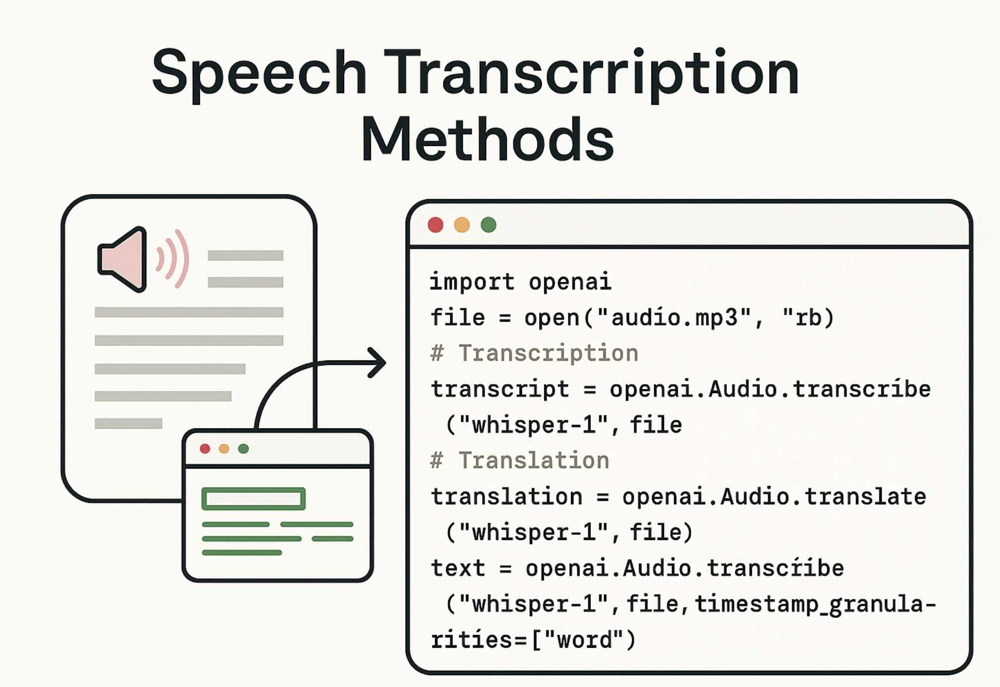

Introduction
Speech-to-text has three practical shapes: upload a file, stream audio in chunks, or run realtime captions. This guide explains when each shines, then gives minimal scripts you can adapt for your product or internal tools.
Methods at a glance
- File transcription — simplest: send a .wav/.mp3 and get text back.
- Streaming transcription — send long audio in parts; see partial text as you go.
- Realtime captions — low-latency text for meetings, calls, or assistants.
How to choose
- Have a finished recording? Pick file transcription.
- Processing hours of audio? Use streaming to avoid huge uploads and to view partials.
- Need live captions? Use the Realtime API for sub-second latency.
Setup once
# 1) Install the OpenAI SDK
pip install --upgrade openai
# 2) Export your key (or use .env)
export OPENAI_API_KEY="sk-...redacted..."
Tip: keep keys out of source control; use env vars or a secrets manager.
File transcription (recordings → text)
Great for podcasts, interviews, voicemail, and call recordings.
from openai import OpenAI
client = OpenAI()
with open("meeting.wav","rb") as f:
result = client.audio.transcriptions.create(
model="whisper-1",
file=f,
response_format="text" # or "json" / "srt" / "verbose_json"
)
print(result)Streaming transcription (long audio, partials)
Send chunks as you read from disk or a recorder. Useful for long sessions.
from openai import OpenAI
client = OpenAI()
stream = client.audio.transcriptions.create_stream(
model="whisper-1",
# add language/prompt if helpful for accuracy
)
def read_chunks(path, size=4096):
with open(path, "rb") as f:
while True:
b = f.read(size)
if not b: break
yield b
for chunk in read_chunks("lecture.wav"):
stream.send(chunk)
if stream.has_partial:
print("partial:", stream.partial_text)
final_text = stream.close()
print("final:", final_text)Realtime captions (low latency)
Use WebSockets to push PCM/Opus frames and receive interim/final text.
import asyncio, websockets, json, sounddevice as sd
API_KEY = "sk-...redacted..."
URI = "wss://api.openai.com/v1/realtime?model=realtime-stt"
async def mic_stream():
# yield raw audio frames from the microphone
samplerate = 16000
q = asyncio.Queue()
def cb(indata, frames, time, status):
q.put_nowait(bytes(indata))
with sd.RawInputStream(callback=cb, samplerate=samplerate, channels=1, dtype="int16"):
while True:
yield await q.get()
async def run():
async with websockets.connect(
URI,
extra_headers={"Authorization": f"Bearer {API_KEY}"}
) as ws:
await ws.send(json.dumps({"type":"start"}))
async for frame in mic_stream():
await ws.send(frame)
msg = await ws.recv()
data = json.loads(msg)
if data.get("text"):
print(data["text"])
asyncio.run(run())
Best practices
- Pick the right sample rate: 16 kHz mono PCM works well for speech.
- Give context: A short domain prompt (product names, people) boosts accuracy.
- Post-process: run a second pass for punctuation, casing, or diarization if you need it.
- Privacy: scrub PII in call recordings when required; rotate keys; use HTTPS/WSS only.
FAQ
Which method is cheapest? File transcription often is; realtime adds persistent connection overhead.
How fast is realtime? With small frames and good uplink, latency can be well under a second.
Can I get timestamps? Use JSON/verbose formats, then render SRT/VTT for players.
Conclusion & next steps
Start with file transcription to validate quality, move to streaming for long content, then add realtime when you need live captions. Keep prompts and codecs consistent so results are comparable.
Related: GPT-5 Prompt Guide • AI Voice Generator